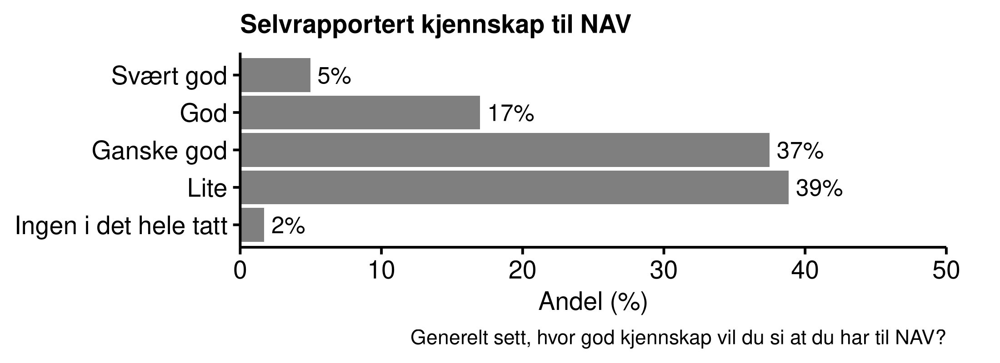
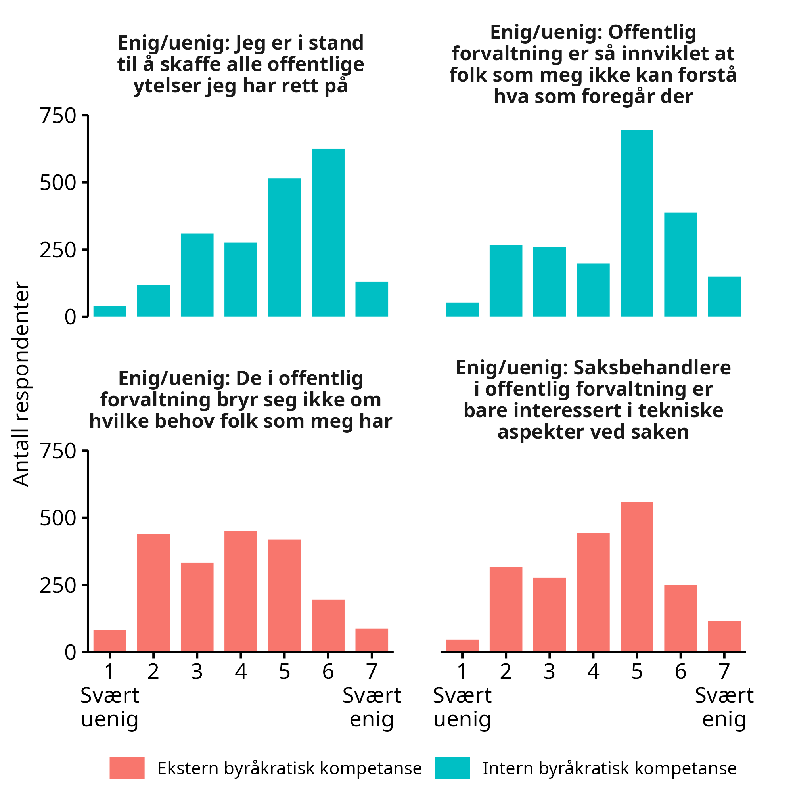
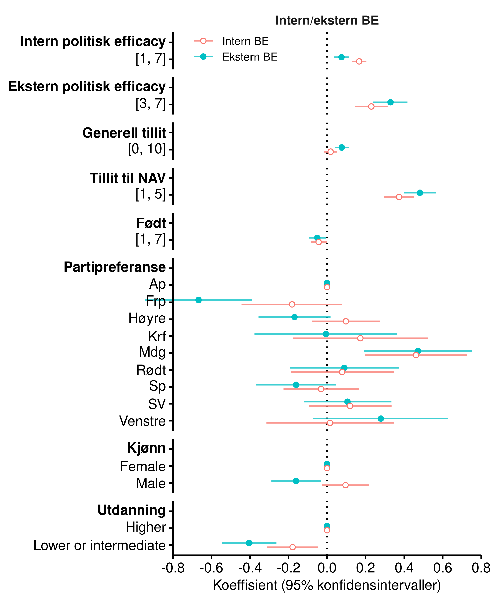
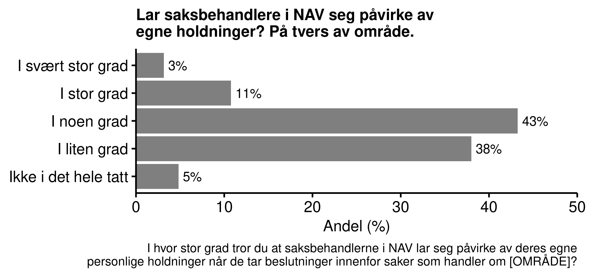
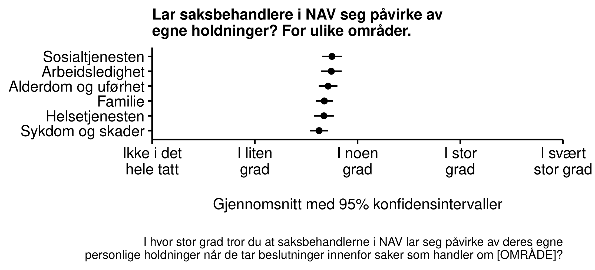

Chapter 4 Tillit og NAV
Norge er kjent som et land der myndighetene nyter høy tillit i befolkningen. Dette bekreftes også i vår undersøkelse for NAV sin del. Fire av ti innbyggere i Norge har høy eller svært høy tillit til NAV, mens bare en av seks har liten eller ingen tillit. På en skala fra 1 til 5 der 1 er lavest og 5 er høyest, er gjennomsnittsverdien på xx.
Tillit til NAV
Tillit er noe som tar lang til å bygge opp, men som fort kan rives ned. Det er et godt utgangspunkt at NAV nyter tillit i befolkningen, og ikke desto viktigere at denne relasjonen ivaretaes parallelt med at organisasjonen endrer seg og utvikler morgendagens forvaltning.
4.1 Erfaring med og kjennskap til NAV
Et flertall av innbyggerne i Norge har hatt befatning med NAV i en eller annen form. Noen kontakter er lite personlige, som for eksempel når man mottar barnetrygd. Andre krever mer kontakt med NAV, og gjerne personlig kontakt med en saksbehandler. I vårt utvalg har godt over halvparten minst en gang vært i personlig kontakt med NAV.
Personlig kontakt med NAV
Fire av ti innbyggere i Norge har liten eller ingen kjennskap til NAV, mens seks av ti har ganske god, god, eller svært god kjennskapt til institusjonen.

Figur: Tillit til NAV brutt ned på erfaring med og kjennskap til NAV
4.2 Byråkratisk kompetanse
I statsvitenskapen opererer man med et begrep som på engelsk heter political efficacy. Vi kan gjerne oversette begrepet på norsk til politisk kompetanse. Politisk kompetanse viser til en persons selvopplevde evne til å forstå politikk (internal political efficacy), og personens opplevelse av å kunne påvirke politiske prosesser (external political efficacy). Vi ser at intern og ekstern politisk kompetanse henger sammen med politisk deltakelse, med tilfredshet med demokratiet, tillit til institusjoner, blant annet.
På samme måte som at innbyggerne har ulike evner til å forstå politikk og påvirke politiske prosesser, har de også ulike evner til å forstå forvaltningen. I motsetning til i politisk arbeid er det ikke et mål at innbyggerne nødvendigvis skal kunne påvirke en byråkratisk prosess, men det er likefullt en kjennsgjerning at noen personer er flinkere til å følge opp saker på vegne av seg selv eller pårørende, og slik sett er bedre i stand til å ivareta sine interesser i saker som angår dem.
For å avdekke hvordan disse ferdighetene fordeler seg i befolkningen har vi spurt respondentene om deres byråkratiske kompetanse - intern og ekstern. Intern byråkratisk kompetanse måler vi ved hjelp av to påstander som de skal si seg enig eller uenig i:
Jeg er i stand til å skaffe alle offentlige ytelser, tjenester, og tillatelser som jeg har rett på.
Den offentlige forvaltningen er så innviklet at folk som meg ikke kan forstå hva som foregår innad i ulike etater, direktorat, kommuner, og så videre.
Ekstern byråkratisk kompetanse måler vi ved hjelp av to nye påstander:
De som jobber i den offentlige forvaltningen bryr seg ikke om hvilke behov folk som meg har.
Saksbehandlere i den offentlige forvaltningen er bare interessert i tekniske aspekter ved saken, ikke hva de det berører faktisk ønsker.

Figurene viser at det er ganske stor spredning i svarene. Flertallet av innbyggerne er enige i påstanden at de får alle ytelser som de har rett på. Et flertall svarer samtidig at de opplever byråkratiet som vanskelig å forstå. Flertallet er uenige i at de som jobber i offentlig forvaltning ikke bryr seg om folks behov, men det er også et stort mindretall som er enige i denne påstanden. Et lite flertall mener at saksbehandlere bare er interessert i tekniske aspekter ved saken.
Dette er befolkningen i sin helhet. Når vi bryter svarene ned på sosiopolitiske undergrupper ser vi at dem som har lav byråkratisk kompetanse også har lav politisk kompetanse (efficacy). Tillit til NAV samvarierer også sterkt med byråkratisk kompetanse. Det vil si at de som har tillit til NAV er de som opplever at de får ytelsene de har rett på, som føler at de forstår de byråkratiske prosessene, som tenker at de som jobber i offentlig sektor bryr seg om folks behov, og som ikke bare forholder seg til tekniske aspekter i saksbehandlingen.

Byråkratisk kompetanse varierer også til dels mye mellom folk når vi deler dem inn i hvilket parti de ville ha stemt på dersom det var stortingsvalg i morgen. Figuren under viser at det er størst forskjell på de som stemmer Fremskrittspartiet og de som stemmer Miljøpartiet de grønne, spesielt når det gjelder ekstern byråkratisk kompetanse.
Menn scorer noe lavere enn kvinner på ekstern byråkratisk kompetanse, og det samme gjør personer uten høyere utdanning sammenliknet med personer med høyere utdanning. De scorer også noe lavere på intern byråkratisk kompetanse, men her er forskjellen mindre (men fortsatt statistisk signifikant).
4.3 Tiltro til likebehandling i NAV
Et styrende prinsipp i norsk forvaltning er nøytralitet: Saksbehandlere skal utøve sitt mandat uten å la egne holdninger komme i veien og påvirke beslutningsprosessen. Slik uhildet behandling av innbyggerne står også sentralt i forskning på hvilke egenskaper ved byråkratiet som underbygger legitimitet og rettferdighetsoppfatninger. Når vi spør innbyggerne i Norge hvordan de oppfatter at saksbehandlerne i NAV lar seg påvirke av egne holdninger, finner vi at de tror det forekommer i noen grad. Det er liten forskjell på de ulike områdene innenfor NAV.
 
Her hadde det vært interessant å se hvordan denne fordelingen samvarierer med byråkratisk kompetanse.